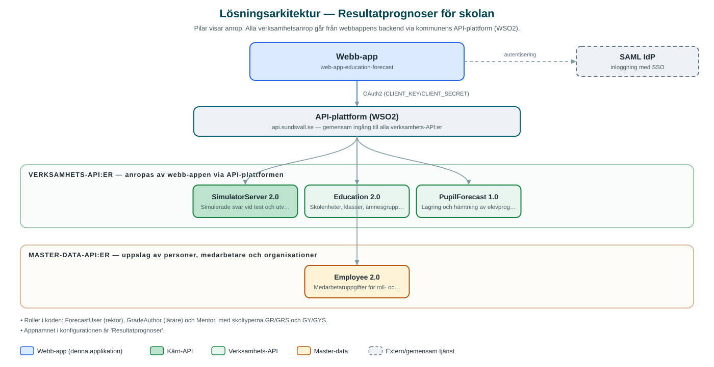

Resultatprognoser för skolan
Verktyg där lärare, mentorer och rektorer registrerar och följer prognoser över elevers möjlighet att nå målen i sina ämnen.
Om applikationen
Tjänsten, i gränssnittet kallad Resultatprognoser, låter lärare fylla i prognoser per elev och ämnesgrupp för aktuell period – till exempel om eleven väntas nå målen eller riskerar att inte göra det (varning). Prognoserna sparas centralt och kan följas över tid, med jämförelse mot tidigare perioder.
Olika roller ser olika delar: lärare fyller i och ser sina egna ämnen och grupper, mentorer följer sin mentorsklass, och rektorer ser samtliga klasser, ämnesgrupper och elever på skolan. Tjänsten omfattar både grundskola och gymnasium (inklusive anpassad skola).
Rollerna hämtas automatiskt utifrån användarens anställning och koppling till skolenheter, så att behörigheten följer den faktiska organisationen.
Det här stödjer applikationen
- Prognos per elev och ämne – Lärare registrerar prognoser för elever i sina ämnesgrupper för aktuell period.
- Rollstyrda vyer – Lärare ser sina ämnen och grupper, mentorer sin mentorsklass och rektorer hela skolan.
- Uppföljning över tid – Prognoser kan jämföras med tidigare perioder och sammanställas per klass och elev.
- Signalering – Elever markeras utifrån prognos, till exempel godkänd, varning eller ej godkänd.
- Sökning – Sök bland elever, klasser och ämnesgrupper.
Teknisk dokumentation
Nedan beskrivs hur applikationen är uppbyggd, vilka API:er den använder och vad som krävs för att driftsätta den. Informationen är härledd ur källkoden och dess konfiguration på GitHub.
Arkitektur

Applikationen består av en webbaserad frontend (Next.js (pages router), React, TypeScript, sk-web-gui, Tailwind CSS, Zustand, react-hook-form) och en backend (Node.js, Express, routing-controllers, Passport SAML) som utvecklas i samma kodbas. Verksamhetsanrop går via kommunens gemensamma API-plattform (WSO2) – frontend pratar aldrig direkt med underliggande system. Inloggning: SAML (SSO) med rollstyrning (ForecastUser/rektor, GradeAuthor/lärare, Mentor). Övriga integrationer som förekommer i koden: SAML IdP, WSO2 API-gateway.
Teknikstack
- Frontend: Next.js (pages router), React, TypeScript, sk-web-gui, Tailwind CSS, Zustand, react-hook-form
- Backend: Node.js, Express, routing-controllers, Passport SAML
- Test: Jest och Cypress (frontend), Jest och Supertest (backend)
API-beroenden
Applikationen konsumerar följande API:er via kommunens API-plattform. Versionerna är hämtade ur källkodens API-konfiguration.
| API | Version | Användning |
|---|---|---|
| SimulatorServer | 2.0 | Simulerade svar vid test och utveckling |
| Education | 2.0 | Skolenheter, klasser, ämnesgrupper och elever |
| PupilForecast | 1.0 | Lagring och hämtning av elevprognoser |
| Employee | 2.0 | Medarbetaruppgifter för roll- och behörighetsstyrning |
Konfiguration och driftsättning
- .env-filer för frontend och backend utifrån .env-exempel
- CLIENT_KEY/CLIENT_SECRET mot kommunens API-gateway
- SAML-certifikat, nycklar och callback-URL:er
Noterbart ur källkoden
- Roller i koden: ForecastUser (rektor), GradeAuthor (lärare) och Mentor, med skoltyperna GR/GRS och GY/GYS.
- Appnamnet i konfigurationen är 'Resultatprognoser'.
Källkod
Källkoden är öppen och finns hos Sundsvalls kommun på GitHub. I källkodsförrådet finns även instruktioner för att klona, konfigurera och starta applikationen i egen miljö.